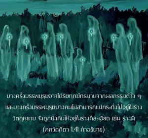

แน่นอนว่าการเพิ่มประชากรที่ไม่พึงปราราถนาเป็นสาเหตุแห่งชีวิตเสมือนอยู่ในนรก ทั้งของครอบครัวและของผู้ที่ทำลายประเพณีครอบครัว บรรพบุรุษของครอบครัวที่วิบัติเช่นนี้จะตกต่ำ เพราะพิธีการถวายอาหารและน้ำให้แด่พวกท่านต้องหยุดชะงักลงทั้งหมด

ตามกฎของกิจกรรมเพื่อหวังผลทางวัตถุมีความจำเป็นต้องถวายอาหารและน้ำเป็นครั้งคราวให้แก่บรรพบุรุษของครอบครัว การถวายอาหารเช่นนี้ปฏิบัติด้วยการบูชาพระวิษฺณุ เพราะว่าการรับประทานอาหารที่เหลือจากที่ถวายให้องค์วิษฺณุจะส่งผลให้เราหลุดออกจากการกระทำบาปต่างๆ บางครั้งบรรพบุรุษอาจได้รับทุกข์ทรมานจากผลกรรมต่างๆ และบางครั้งบรรพบุรุษบางคนไม่สามารถแม้กระทั่งไปอยู่ในร่างวัตถุหยาบจึงถูกบังคับให้อยู่ในร่างที่ละเอียด เช่น ร่างผี ดังนั้นเมื่อ ปฺรสาทมฺ (อาหารที่เหลือจากพระวิษฺณุ) ที่เราเอาไปถวายบรรพบุรุษของเราจะให้พวกท่านได้หลุดพ้นจากร่างผีหรือร่างชีวิตที่ทุกข์ทรมานอื่นๆ การช่วยเหลือบรรพบุรุษเป็นประเพณีของครอบครัว และผู้ที่ไม่ได้ใช้ชีวิตอุทิศตนเสียสละรับใช้องค์ภควานฺจำเป็นต้องปฏิบัติพิธีกรรมเหล่านี้ ผู้ที่ปฏิบัติการอุทิศตนเสียสละรับใช้องค์กฺฤษฺณไม่จำเป็นต้องปฏิบัติพิธีกรรมเหล่านี้ เพียงแต่ปฏิบัติตนรับใช้องค์ภควานฺด้วยความเสียสละเราก็จะสามารถส่งบรรพบุรุษนับร้อยนับพันคนจากความทุกข์ทรมานทั้งปวงได้มีกล่าวไว้ใน ภาควต (11.5.41) ว่า
เทวรฺษิ-ภูตาปฺต-นฺฤณำ ปิตฺฤๅณำ
น กิงฺกโร นายมฺ ฤณี จ ราชนฺ
สรฺวาตฺมนา ยห์ ศรณํ ศรณฺยํ
คโต มุกุนฺทํ ปริหฺฤตฺย กรฺตมฺ
“ผู้ใดที่มาพึ่งพระบาทรูปดอกบัวของ มุกุนฺท ผู้ให้อิสรภาพ ละทิ้งพันธกรณีข้อผูกพันทั้งปวง และยึดเอาวิธีปฏิบัตินี้อย่างจริงจังจะไม่เป็นหนี้ในทางหน้าที่หรือสัญญาข้อผูกมัดใดๆต่อเหล่าเทวดา นักบวช สิ่งมีชีวิตทั่วไป สมาชิกในครอบครัว มนุษยชาติ หรือบรรพบุรุษ”พันธกรณีเหล่านี้ถูกยกเลิกไปโดยปริยายด้วยการปฏิบัติการอุทิศตนเสียสละรับใช้บุคลิกภาพสูงสุดแห่งพระเจ้า